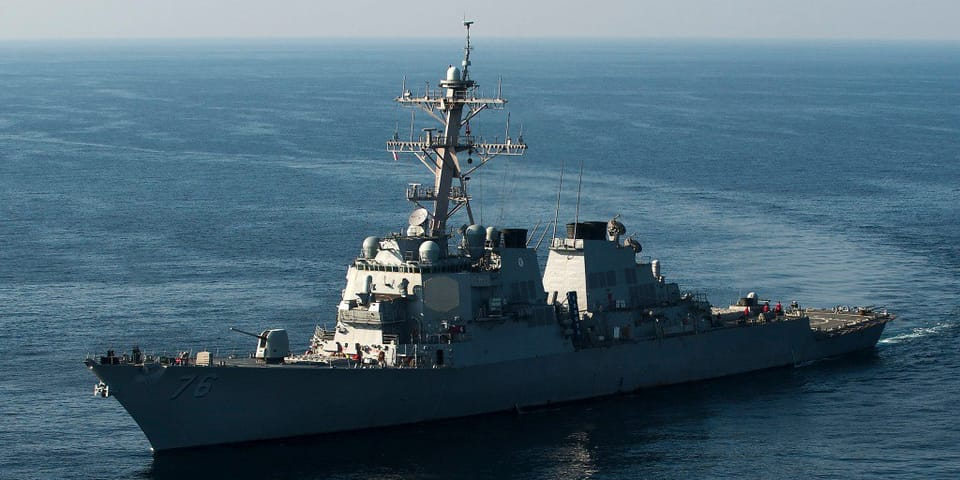

世界苦茶08月14日新闻 | 27条 | 中國7月新增信貸20年來首降

中國7月新增信貸20年來首降 | 莫迪將在美會晤特朗普 | 中國財政部貼息促進消費 | 美威脅強化對俄制裁
每日三條新聞解析
苦茶数据
美元兑人民币：7.17（昨日7.18，前日7.19）
美元兑日元：146.41（昨日147.92，前日148.43）
上证指数：3685（昨日3685，前日3666）
标普500指数：6466（昨日6445，前日6373）
比特币：121989（昨日119413，前日118943）
布伦特原油：65.98（昨日66.23，前日66.82）
中国新闻
• 中国基孔肯雅热疫情扩散 ：中国基孔肯雅热疫情向广东省外蔓延。广西、浙江均被列为基孔肯雅热流行风险一类地区，上海、江苏、安徽被划二类地区。综合中国央视新闻和新民晚报报道，中国疾控局发布的《基孔肯雅热防控技术指南（2025版）》中，广西省和浙江省被列为基孔肯雅热流行风险Ⅰ类地区，与广东属同一风险级别，属于高风险区域，存在输入性疫情和本土蚊媒传染病发生的风险。上海、江苏、安徽被划为二类地区，有一定聚集性疫情发生风险。
• 贵州官员挪用服务器挖比特币 ：中国多家媒体爆料称，今年2月被通报落马的贵州省大数据发展管理局原局长景亚萍，任内把政府服务器挪用为私人矿场，挖出327枚比特币，价值约1亿5000万元人民币。有网民换算称，涉贪金额足够买贵州县城2000套房子。北京广播电视台旗下栏目“诚信北京”、《陕西都市快报》等多家中国媒体星期三发短视频，爆料景亚萍涉贪细节。海南广播电视台旗下栏目“直播海南”也发短视频，称技术官员将专业能力变为敛财工具，暴露出“数字腐败”的新动向，政府的服务器沦为私人的矿场，侵占公共资源。反腐不仅要盯紧钱袋子，更要防“数字后门”。
• 财政部将政策重点转向促消费 ：中国财政部星期三说，财政金融政策的着力点更多转向惠民生、促消费。中国财政部副部长廖岷星期三在新闻发布会上说，个人消费贷款财政贴息政策和服务业经营主体贷款贴息政策，分别从消费的需求端和供给端来发力，将财政金融政策的着力点更多转向惠民生、促消费。财政部将会同有关部门认真组织实施，以真金白银的举措服务居民更好消费、助力经营主体提升服务消费的服务水平，实现供需两端的良性循环，更好满足民众日益增长的美好生活需要。 （翻評：這種貼息怎麼可能真的拉動消費？都拿來買理財了。）
• 美驱逐舰闯入黄岩岛被驱离 ：中国人民解放军南部战区星期三说，美驱逐舰闯入黄岩岛，Scarborough Shoal，菲律宾称斯卡伯勒浅滩，已警告驱离。央视新闻引述南部战区海军新闻发言人何铁城海军大校说，美驱逐舰“希金斯”号未经中国政府批准，星期三非法闯入黄岩岛领海，解放军南部战区海军组织兵力，依法依规跟踪监视、警告驱离。何铁城说，美军行径严重侵犯中国主权和安全，严重破坏南中国海和平稳定，违反国际法和国际关系基本准则。南部战区海军部队时刻保持高度戒备，坚决捍卫国家主权安全和地区和平稳定。
• 国台办批台积电赴美投资 ：针对台积电据报将在美投资3000亿美元，中国大陆国台办星期三指责民进党在关税谈判上“未谈先跪”“打左脸送右脸”，对美国予取予求，无心也无力维护台湾经济发展和民众福祉。中国大陆国台办举行例行新闻发布会，有记者就台积电据报将在美投资3000亿美元，在亚利桑那州建立全世界最大晶圆厂提问。中国大陆国台办发言人朱凤莲回应说，此前，台积电被迫宣布在美加码投资1000亿美元时，已使台湾业界恐慌、民怨沸腾。此次3000亿美元投资一旦落地，势必对台湾经济造成巨大影响，台湾经济的发展动能和自主性将被进一步削弱。
亚太印太新闻
• 日本拟购千亿日元防卫无人机 ：日本政府正协调在2026年度预算申请中列入逾1000亿日元采购经费，用于大规模部署防卫无人机。日本政府也将乌克兰在俄乌冲突中使用的土耳其制低价无人机纳入采购选项。共同社引述政府相关人士报道，为尽快提升利用无人机进行攻击和侦察的能力，政府计划加速为海陆空三大自卫队部署无人机，同时力争日后在国内生产。日本防卫部今年4月成立了专门小组，针对包括小型无人机在内的无人作战系统，探讨未来作战方式。
• 泰国法院将宣判首相免职案 ：路透社报道，泰国法院星期三发声明称，将于8月29日就首相佩通坦的免职案宣判。佩通坦6月与柬埔寨前首相洪森针对泰柬边境紧张局势通电话时，批评了泰国边境指挥官。不料这段通话录音外泄，在泰国国内引发强烈反弹，佩通坦因此面对弹劾，被宪法法院暂停首相职务。
• 韩国收归日据时期土地699万平米 ：韩国自2012年起针对日据时期被日本人强占的土地实施国有化工作，至今共收归国有的土地面积699万平方米，相当于首尔汝矣岛的2.4倍。韩联社报道，韩国调达厅星期三消息，调达厅2012年启动“日本人名义归属财产国有化”项目，对象为日据时期由日本人、日本法人及日本机构在韩持有的房地产。截至目前，政府共查出疑似日本人所持有的8万宗地块，其中有8171宗地块已实现国有化，基准地价合计1873亿韩元。调达厅还清查了在实施国有化程序前，个人以非法手段获取并隐匿的财产，已将197宗地块收回，总面积26万平方米，价值达92亿韩元。
• 莫迪或在美会晤特朗普 ：《印度快报》星期三引述消息人士报道，印度总理莫迪下个月到美国出席联合国大会期间，可能与美国总统特朗普会面。联合国大会9月9日在纽约联合国总部开幕，国家元首和政府首脑的年度会议将在9月23日至29日举行。路透社说，无法立核实《印度快报》的消息。
• 日本政府正探讨扩大二手护卫舰的出口： 近日获悉，日本政府正探讨扩大海上自卫队二手阿武隈型护卫舰的出口。除了此前已透露的对象菲律宾之外，也出现了向印度尼西亚和越南出口的方案。此举旨在加强与位于海上交通要道的东南亚在安全保障方面的合作。具有杀伤能力的护卫舰若属于“共同开发和生产”的情况则可出口。政府计划通过更改二手舰艇的规格将其定位为共同开发，但也可能引发争议。防卫省称，阿武隈型护卫舰在1989年至1993年间共有6艘服役。鉴于自卫队员短缺，日本将转向能够节省人力的新型护卫舰，计划让全部的该型号舰艇退役。
科技新闻
• 美在先进芯片运输中植入追踪器 ：知情人士称，美国政府在部分先进人工智能芯片的运输中植入跟踪器，以检测芯片被转运至受美国出口限制的目的地。这些措施仅适用于正在调查的特定运输。追踪有助于美国执法机构对违反出口管制的个人和公司提起诉讼。参与供应链的人士表示，戴尔、超微等制造商的服务器运输中使用了跟踪器，这些服务器中使用了英伟达和AMD的芯片。跟踪器通常隐藏在服务器运输的包装中。但他们不知道跟踪器的安装当事方和位置。2024年的一个案例中，一批装有英伟达芯片的戴尔服务器的装运箱、包装内、甚至服务器内部装有跟踪器。一些较大的跟踪器约有手机大小。超微和英伟达拒绝就美国当局的追踪行动置评。戴尔表示不知晓美国当局的计划。AMD未回应置评请求。美国国土安全部和联邦调查局拒绝置评，商务部未回应置评请求。中国外交部未立即置评。
• 美法官驳回马斯克驳回请求 ：美国一名联邦法官周二驳回了马斯克试图驳回 OpenAI 公司指控的请求，OpenAI 称这位特斯拉首席执行官对其进行了长达数年的骚扰行动。这起法庭纠纷始于去年，在最新进展中，美国地区法官伊冯娜·冈萨雷斯·罗杰斯裁定马斯克必须面对OpenAI的指控，即这位亿万富翁通过新闻声明、社交媒体帖子、法律诉讼和对OpenAI资产的虚假竞标，试图损害这家人工智能初创公司。OpenAI于四月对马斯克提起反诉，指控这位亿万富翁违反加州法律，从事欺诈性商业行为。法官周二判定OpenAI的指控在法律上具备充分依据可继续推进。陪审团审判定于2026年春季进行。
• AI伴侣应用市场增长迅速 ：除 ChatGPT 和 Grok 等知名应用外，人工智能伴侣应用的需求正在增长。根据应用情报公司 Appfigures提供的新数据，在全球可用的 337款活跃并有营收的AI伴侣应用中，有 128款是在2025年以来发布的。移动端AI市场这一细分领域在今年上半年已创造了8200万美元收入，并有望在年底前突破 1.2 亿美元。截至2025年7月，AI 伴侣应用在苹果应用商店和 Play商店上的全球下载量已达 2.2 亿次。在2025年上半年，下载量同比增长了88%，达到6000万次。截至今年7月，AI 伴侣应用在全球带动了2.21亿美元用户支出。
财经新闻
• 中国7月新增贷款20年来首降 ：中国7月新增人民币贷款20年来首次收缩，远低于分析师预期，但更广义信贷增速改善，显示央行短期内无迫切放松货币政策的压力。中国人民银行星期三公布数据显示，今年前七个月人民币贷款增加12.87万亿元人民币。而前六月人民币贷款增加12.92万亿元。按此计算，7月新增人民币贷款减少500亿元，这是自2005年7月以来首次出现收缩，也是自1999年12月以来最大单月降幅。
• 美财长称利率应降150基点 ：美国财政部长贝森特称，当前利率“过于束缚”，可能应当比目前水平低150至175个基点。贝森特星期三接受彭博电视采访时指出，美国联邦储备局或在未来几个月采取一系列的降息措施，以9月降息50个基点作为起点。他说：“降息50个基点的可能性非常大……我们可能会从现在开始进入一系列的降息，从9月的50个基点开始。”
• 日本对韩中钢材启动反倾销调查 ：日本官方宣布，将对韩国和中国产钢材启动反倾销调查。据日本共同社报道，日本财务省和经济产业省星期三宣布，将对从韩国和中国进口的钢材展开反倾销调查。日本制铁、神户制钢所等日本国内四家大型企业主张蒙受损失，4月申请实施调查。报道称，调查对象为热镀锌钢带和钢板，用于防护栏和住宅建材等。调查原则上在一年内结束，将判断是否征收反倾销税。
• 中国反制两家立陶宛银行 ：针对欧盟此前对俄制裁名单含多家中企，中国商务部星期三宣布，将欧盟两家总部设在立陶宛的银行列入反制清单。中国商务部发布关于对欧盟两家金融机构采取反制措施的决定，指欧盟上月18日在第18轮对俄罗斯制裁中将两家中国金融机构列入制裁名单，严重违反国际法和国际关系基本准则，严重损害中国企业合法权益。商务部说，依据《中华人民共和国反外国制裁法》和《实施〈中华人民共和国反外国制裁法〉的规定》相关规定，经国家反外国制裁工作协调机制批准，决定将欧盟UAB Urbo Bankas和AB Mano Bankas两家银行列入反制清单，并采取以下反制措施：禁止中国境内的组织、个人与其进行有关交易、合作等活动。
• 茅台半年营收利润增速放缓 ：受白酒等高端饮品需求疲软拖累，贵州茅台半年度营收和利润增速均出现多年来最差表现。贵州茅台星期二报告，上半年营收同比增长9.2%，至911亿元人民币，净利润同比增长8.9%至454亿元。根据彭博汇编的数据，茅台半年度营收和净利润增速都出现至少2016年以来最慢水平。
俄乌战争
• 美财长称对俄或扩大制裁 ：美国财政部长贝森特表明，若总统特朗普与俄罗斯总统普京的会晤进展不顺，美国可能扩大制裁范围，或对俄征收二级关税。他也呼吁欧洲国家协同施压，以提升谈判筹码。贝森特星期三接受彭博电视台采访时强调，特朗普将在会晤中向普京明确传达“一切选项都摆在桌面上”的立场。
• 爱沙尼亚驱逐俄外交官 ：爱沙尼亚指责俄罗斯外交官干预国家内政，宣布驱逐一人。俄罗斯指爱沙尼亚此举属“敌对行为”，俄方将予以回应。路透社报道，这名被列为“不受欢迎人士”的外交官是俄罗斯驻爱沙尼亚大使馆里的一等秘书。爱沙尼亚外长查赫克纳星期三在声明中说：“俄罗斯使馆对爱沙尼亚内政的持续干预必须结束。”
• 泽连斯基赴柏林参加线上会议 ：乌克兰总统泽连斯基星期三抵达柏林，并将与欧洲盟友一起和美国总统特朗普举行线上会议。路透社引述政府消息人士报道，德国总理默茨星期三将在柏林主持会谈，为特朗普与俄罗斯总统普京星期五在阿拉斯加举行的峰会做准备。除了泽连斯基，芬兰、法国、英国、意大利、波兰，以及欧盟和北约的领导人也受邀参加会议。乌方希望此次会议至少能在一定程度上对冲阿拉斯加峰会的影响。泽连斯基及其支持者将借机强调，追求停火的过程中若牺牲基辅核心利益，将带来深远而危险的后果。
• 美法院系统遭俄黑客入侵 ：俄罗斯疑似是美国联邦法院档案系统遭入侵事件的幕后黑手，美国联邦官员正在紧急评估损失，并修补一个庞大且频繁使用的电脑系统中长期存在的漏洞。《纽约时报》星期二报道，几名了解此次入侵事件的人士透露，调查人员发现的证据表明，储存联邦法院文件的电脑系统最近遭到黑客攻击，俄罗斯对此至少负有部分责任。系统中的信息包括可能会泄露消息来源和被控国家安全罪行人员的高度敏感记录。目前尚不清楚入侵事件是哪个实体所为，是否是俄罗斯情报机构的一个部门在幕后操控，或有其他国家参与其中。
国际新闻
• 新西兰总理批内塔尼亚胡失智 ：新西兰总理拉克森表明，在新西兰权衡是否承认巴勒斯坦国之际，他认为以色列总理内坦亚胡已“失去理智”。路透社报道，领导中右翼联合政府的拉克森星期三指出，从人道援助严重匮乏，到强行驱逐平民，再到意图吞并加沙，这一系列举动令人震惊，显示内坦亚胡已远远越界。“我认为他已经失去理智……我们昨晚所看到的对加沙城的袭击，完全不可接受。”
• 以军批准新一轮加沙攻势计划 ：以色列军方星期三称，以军总参谋长埃亚尔·扎米尔已批准针对加沙地带进攻计划的“主要构想”。路透社报道，以方此前已表明，将发动新一轮军事行动，并重新夺取加沙城。这座城市在2023年10月战争爆发后不久一度被以军占领，但以军随后又撤出。新计划的批准，意味着以军向新一轮攻势迈出关键一步。
• 加拿大航空空服员将全面罢工 ：加拿大航空空服人员计划于星期六起罢工。工会与航空公司在上月结束的调解会议中未能达成协议。加拿大航空公司因此被迫于星期四起逐步取消航班，星期六全面停飞。彭博社报道，工会在声明中指出，谈判破裂后已向公司发出72小时罢工通知。有99.7%的工会会员投票支持罢工。
• 英法德威胁重启对伊朗制裁 ：英国、法国和德国已致函联合国，警告若伊朗在8月底前不重返谈判桌，为伊朗核问题寻求外交解决方案，三国将重启制裁。据法新社报道，英法德三国在信中说，他们“致力于动用一切外交手段，以确保伊朗不发展核武器”。英、法、德、中国和俄罗斯同为2015年伊朗核协议的缔约方，协议以解除制裁换取伊朗限制核计划。美国原本也是缔约方，但在2018年单方面退出。
• 澳瓦签署5亿澳元合作协议 ：中国影响力在太平洋地区日益增长之际，澳大利亚与瓦努阿图达成总额5亿澳元的协议，全面深化经济与安全合作。路透社报道，瓦努阿图总理纳帕特星期三宣布，这份名为“纳卡马尔协议”的合作框架，将在未来10年内为瓦努阿图引入澳方投资，堪称双赢。他说，协议内容涵盖安全合作和经济转型，并将重点推动劳工流动，为两国带来可观的贸易利益。